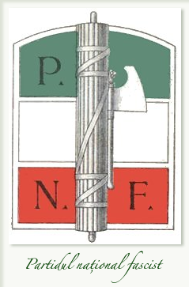
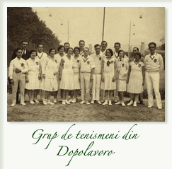
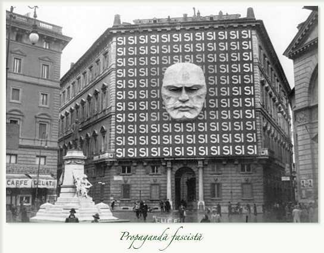
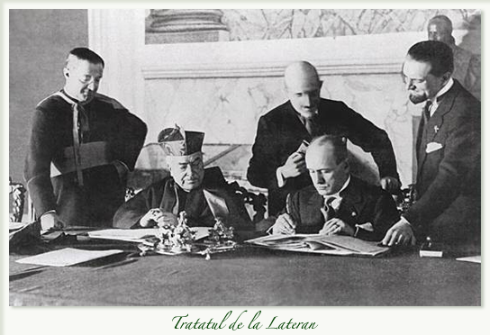
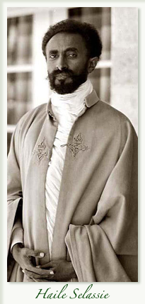

În cursul primului deceniu, fascismul obţine, pe plan intern şi extern, o serie de succese care îl aduc în centrul atenţiei burgheziei conservatoare europene, sedusă de forma autoritară a regimului.
În realitate, fascismul este o adaptare continuă la circumstanţe. Doctrina sa este un amestec între futurismul lui Marinetti, retorica naţionalistă a lui D’Annunzio, „actualismul“ filozofului Gentile, reminiscenţe istorice: Antichitatea romană şi mitul mediteranean al Romanità-ului, Dante şi Machiavelli, Mazzini şi Garibaldi. Naţionaliştii raliaţi lui vor fi aceia care îi vor furniza elementele cele mai eficiente (Federzoni, Rocco).
Această frazeologie eterogenă se impune printr-o propagandă continuă. Concepţia „totalitară“ a statului subordonează individul faţă de colectivitate şi face din el un instrument al puterii. „Fascizarea“ instituţiilor este pusă în aplicare treptat. Statul de la 1848 rămâne o faţadă, în spatele căreia autoritatea se concentrează în mâinile Ducelui şi ale Partidului. Puterea electivă este redusă la minimum. Legea din 17 mai 1928 instituie un sistem reprezentativ ce asigură desemnarea deputaţilor de către Marele Consiliu al Partidului.
În 1929, Camera corporativă devine expresia plebiscitară a unei opinii publice puternic influenţate de catre o presă aflată în slujba regimului. Adunările locale alese sunt desfiinţate. Un centralism riguros îi transformă pe prefect şi pe podestaţii comunali în executanţii servili (însă nu scutiţi de corupţie) ai unei puteri reglementare elaborate de către o birocraţie în exces. Magistratura este epurată, iar juriul suprimat. Sunt redactate noi coduri de legi în care interesul dictaturii primează asupra dreptului natural.
Legile din 26 si 30 noiembrie 1926 suprimă libertatea presei şi de asociere. O serie de texte întăresc armatura poliţienească a regimului. Opoziţia antifascistă este decimată de procese, refugiindu-se în străinătate.
Mussolini nu are încredere în colaboratorii săi şi tinde să concentreze tot mai multe atribuţii. În 1935 va cumula şapte portofolii. Alături de funcţionarii tradiţionali acţionează ierarhia paralelă a Partidului, puternic organizat. El este condus de Duce, secretarul general, consiliul naţional şi federaţiile provinciale, denumite, după modelul etiopian, ras.
Armata, din care multe elemente rămân în rezervă, este dublată de o serie de miliţii fasciste ce controlează ordinea publică şi anumite servicii (căile ferate, poşta, porturile, drumurile, apele şi pădurile). O reţea de ascociaţii îi înregimentează pe tinerii de ambele sexe, de la Balilla la Avangardişti. Funcţionarii şi muncitorii sunt grupaţi în sindicate fasciste unice şi îşi petrec timpul liber în cadrul aşanumitului Dopolavoro.
În domeniul social, fascismul a pretins că realizează o operă originală, depăşind capitalismul şi marxismul, prin corporatism. Acesta constă în alinierea paritară a muncitorilor şi patronilor, în interzicerea grevelor şi a lock out-ului şi în redactarea de contracte colective. Sistemul este elaborat gradual. Legea Rocco (3 august 1926) aduce sub controlul statului viaţa sindicală, instituie arbitrajul obligatoriu şi creează tribunalele muncii.
La finele lui aprilie 1927 este promulgată Cartea Muncii. Legea din 17 mai 1928 înlocuieşte reprezentarea electivă şi politică prin cea a corporaţiilor. Întreaga viaţă economică este structurată în corporaţii, iar Consiliul naţional al Corporaţiilor (20 martie 1930) coordonează toate deciziile guvernamentale în domeniul economic.
În acelaşi timp, bântuit de voinţă de putere, Ducele, mânat de o obsesie demografică, desfăşoară o propagandă natalistă şi stopează emigraţia. Până la marea criză mondială din 1929, conjuctura economică, stimulată de politica lucrărilor de anvergură (ameliorarea pământurilor necultivate, refacerea autostrăzilor) este favorabilă. Fascismul se angajează în „bătălia grâului“ şi o câştigă. În marile oraşe ia amploare o politică edilitară cu monumente în „stil lictor“, pretenţios şi retoric.
Depresiunea din anii 1930-1932 determină evoluţia economiei spre autarhie şi întărirea controlului statului. Refuzând să devalorizeze lira, Mussolini închide Italia într-o barieră protecţionistă, instaurează un control sever al schimburilor comerciale, preia cu fonduri de stat gestionarea întreprinderilor aflate în dificultate. Institutul pentru Reconstrucţia Industială (IRI), creat la 23 ianuarie 1933, şi care rămâne una dintre piesele de bază ale economiei, procedează la regrupări şi fuziuni care asigură controlul regimului asupra reţelei telefonice, construcţiilor navale, societăţilor de navigaţie, siderurgiei. Comenzile de armament susţin artificial industria grea. Regimul fascist revendică deja un imperiu colonial, în numele potenţialului său uman şi al misiunii sale civilizatoare.
Anii ’30 sunt punctul de apogeu al regimului. Pretutindeni triumfa conformismul şi, în enorma sa majoritate, societatea italiană se raliază fascismului. Opoziţia este puţin eficientă, divizată. Antifasciştii sunt trimişi în închisoare, precum gânditorul marxist Antonio Gramsci (1891-1937), exilaţi, precum liberalul Piero Gobetti (1901-1926), obligaţi la domiciliu forţat (confino). Pentru mase nu contează că gânditorii şi artiştii cei mai reprezentativi ai culturii italiene se declară împotriva lui Mussolini.
Reconcilierea cu Sfântul Scaun îi aduce un nou câştig de popularitate. Preocupat să-i aducă în slujba sa pe reprezentanţii catolicismului, Ducele îşi îmblânzeşte anticlericalismul iniţial, apoi, după negocieri dificile, încheie cu Pius al XI-lea acordurile de la Lateran (11 februarie 1929). Un tratat, un concordat şi o convenţie financiară lichidează „chestiunea romană“.
Papa este recunoscut drept suveran al cetăţii Vaticanului şi catolicismul devine religia de stat în Italia. Sfântul Scaun obţine, în compensaţie pentru pierderea teritoriilor sale, o indemnizaţie substanţială (750 milioane de lire în numerar şi un miliard în obligaţiuni de stat cu dobândă de 5%). Căsătoria religioasă primeşte efecte civile, iar divorţul este interzis. Astfel, deşi „Concilierea“ a trecut mai târziu prin situaţii furtunoase, pentru majoritatea italienilor, va conferi regimului fascist sancţiunea şi aprobarea papale.
Aceasta prezintă o serie de ezitări şi de contradicţii. Campion al ordinii instaurate împotriva bolşevismului, Ducele ajunge să pună sub semnul întrebării ordinea europeană instituită în 1919, care a decepţionat profund Italia. El va oscila între colaborarea cu regimurile democratice şi sprijinirea celor autoritare, de inspiraţie fascistă, care se înmulţesc în Europa, după criza din 1929-1932.
Începând din 1926, exceptând incidentul italo-grec ce determină ocuparea, apoi evacuarea insulei Corfu (1923), guvernul fascist practică o politică de colaborare internaţională, menită să liniştească marile puteri. Acordul cu privire la Fiume (27 ianuarie 1924) normalizează raporturile cu Iugoslavia; Italia recunoaşte URSS, participă la lucrările Societăţii Naţiunilor şi aderă la pactul de la Locarno (16 octombrie 1926) privind garantarea frontierelor occidentale. Apoi, până in 1932, deşi susţine Franţa în chestiunea reparaţiilor datorate de către Germania, Mussolini se arată favorabil revizionismelor contestatarilor tratatelor de pace, în special în Ungaria, şi contracarează politica iugoslavă.
El este modelul dictatorilor fată de care emulii – precum Hitler, de la începuturile puterii sale – manifestă un respect plin de deferenţă. Creşterea ambiţiilor naziste inaugurează a treia fază de apropiere faţă de regimurile democratice (1932-1935). Prin Pactul în Patru din 7 iulie 1933, încheiat cu Parisul şi Londra. Italia încearcă să asocieze Germania la o reglementare negociată a problemelor internaţionale. De asemenea, Mussolini sprijină realismul conservator catolic care, în Austria, combate intenţiile anexioniste ale Reichului.
În iulie 1934, asasinarea cancelarului Dollfuss de catre nazişti provoacă o vie reacţie din partea italiană şi sunt masate trupe pe Brenner. Roma iniţiază un proces de colaborare cu Franţa şi cu Marea Britanie. La 7 ianuarie 1935, acordurile de la Roma între Mussolini şi Pierre Laval acordă Italiei rectificării minore de frontiere, la hotarele Libiei şi Eritreei, recunosc regimul special al italienilor în Tunisia şi, în special, lasă Ducelui „mâna liberă“ pentru o acţiune în Etiopia.
La Stresa (11-14 aprilie), Franţa, Italia şi Marea Britanie îşi declară opoziţia faţă de orice modificare prin forţă a statu-quo-ului european. Dar „politica de la Stresa“ este repede compromisă prin acordul naval anglo-german. „Afacerea etiopiană“ va anunţa sfârşitul unei înţelegeri între foştii aliaţi din Primul Război Mondial.
Începând din 1932, deşi peste tot în lume faza cuceririlor coloniale era încheiată, Mussolini are în vedere, din considerente de prestigiu, o reluare a expansiunii peste mări. Într-adevăr, în ciuda eforturilor lui Balbo în Libia, posesiunile italiene au un viitor foarte nesigur. Din partea Eritreei şi a Somaliei a existat mereu nostalgiei unei pătrunderi spre înaltul platou abisian. De la sfârşitul anului 1934, cu toate că a semnat un tratat de prietenie cu negusul Haile Selassie şi a sprijinit intrarea ţării sale în Societatea Naţiunilor, Mussolini începe o politică de încălcare a frontierelor etiopiene.
În vreme ce plângerea negusului trenează în faţa adunării de la Geneva, la 2 octombrie 1935, Italia declanşează atacul. Societatea Naţiunilor votează atunci sancţiuni economice împotriva Romei. Acestea se dovedesc ineficiente, de vreme ce un mare număr de ţari refuză să le aplice. În plus, Laval şi Sir Samuel Hoare sunt, de fapt, favorabili întreprinderii fasciste şi încearcă să găsească o cale de mijloc. Mussolini refuză orice compromis. El pozează, în ochii opiniei publice italiene, în victima egoismului şi a injustiţiei marilor puteri. Sancţiunile determină un nou câştig de popularitate pentru regim şi îi permit să facă acceptabilă pentru naţiune povara grea a războiului.
După un succes iniţial, ofensiva generalului De Bono se sufocă. La 16 noiembrie, acesta este înlocuit cu Pietro Badoglio (1871-1956) şi locotenentul său, Rodolfo Graziani. Folosirea masivă a aviaţiei, utilizarea gazelor au câştig de cauză în faţa tenacei rezistenţe etiopiene în această luptă inegală. Prin atacuri puternice şi succesive, bastionul abisinian este ocupat. Negusul se refugiază la Londra; la 5 mai 1936, italienii intră în Addis-Abeba, iar la 9 mai, Victor-Emmanuel al III-lea este proclamat împărat al Etiopiei. Sunt necesare multe eforturi pentru pacificarea ţării. Italia întreprinde un mare efort în ce priveşte echipamentul, care nu are însă timpul să îşi arate rezultatele. În 1939, guvernul de la Roma cheltuia în coloniile sale de zece ori mai mult decât obţinea de pe urma lor, iar ţara nu realiza cu propriul Imperiu decât 2% din comerţul total.
Episodul etiopian a fost punctul de cotitură capital al regimului fascist. Ea l-a convins pe Duce de necesitatea unei politici de forţă faţă de democraţiile ezitante şi devizate. În fine, l-a determinat să strângă legaturile cu Germania nazistă şi cu celelalte regimuri totalitare.
Continuare: V. Declinul şi căderea